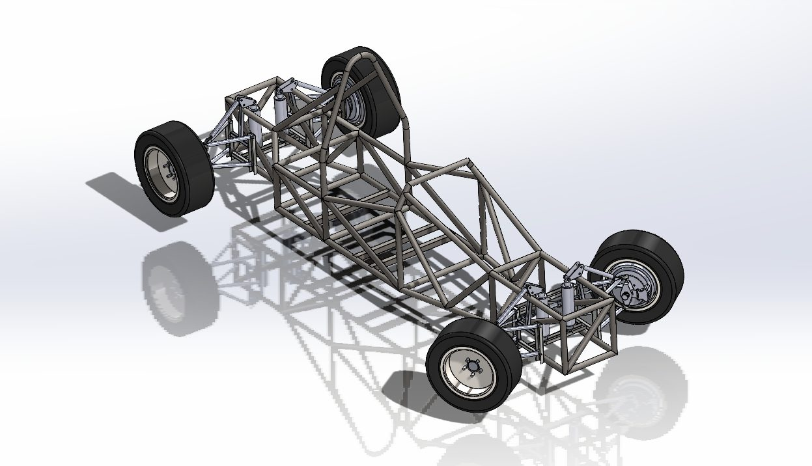
Steering angle: a geared encoder drive
The EPS only assists a driver. It has no command input and no angle output. The end of the column was taken, so the encoder sits beside the column and a gear pair drives it.
- A 29-tooth pinion slides onto the column's own spline, so it can't slip.
- It drives a 116-tooth gear on the encoder, a 4:1 reduction. Full lock (±45°) is only about ±11° at the encoder, so it never leaves its absolute range.
- Resolution is 0.35° per count at the column, over the full 540° of travel.
- One plate locates both shafts, sets the center distance and bolts to existing holes on the EPS housing.
- The gears carry no load, so PLA is enough. Backlash was measured by approaching the same angle from both sides.
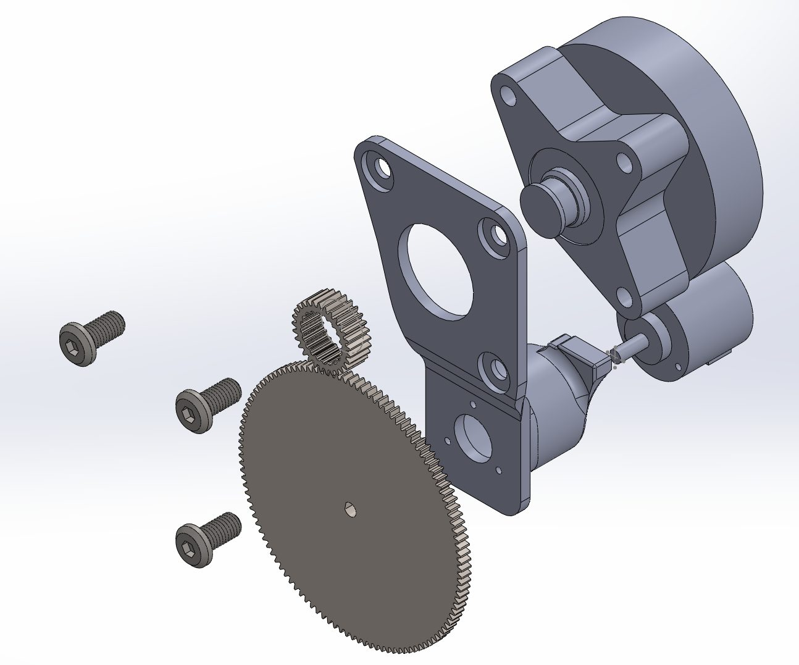

Commanding the EPS: interface board and enclosure
The EPS steers when it senses driver torque, so the controller imitates that signal. The planner sends a target angle, a Teensy 4.1 compares it with the encoder, and two DACs feed the EPS a synthetic torque-sensor signal. A relay defaults to manual, so a driver can always take over.
- Hand-soldered 16-bit DAC board: op-amps, DACs and a charge pump.
- A printed L-shaped enclosure sits beside the column and holds the Teensy, DAC board, relay and RS-485 module, with a removable cover for service.
- In testing the wheel swung −35° on its own. Probing with a scope and multimeter showed a 72 to 85 mV torque-sensor offset. A C++ auto-calibration now holds it within ±3 mV.
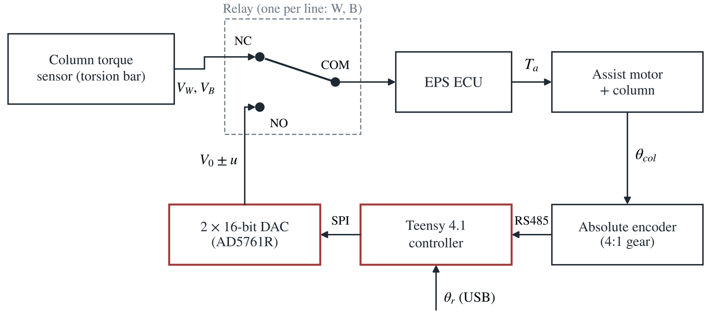
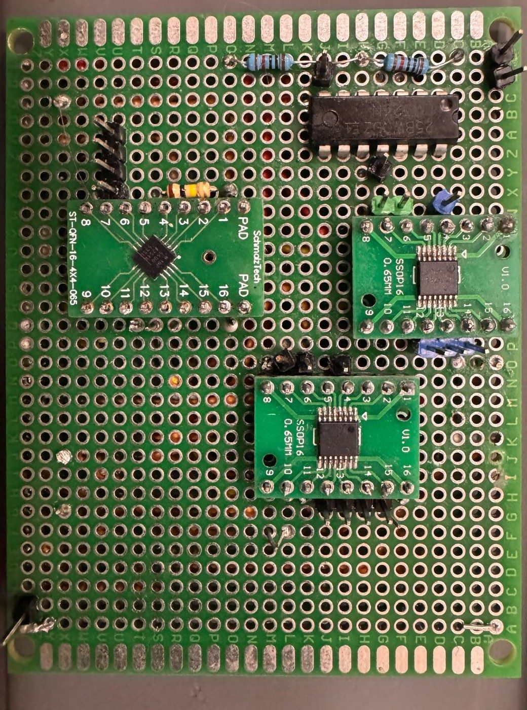
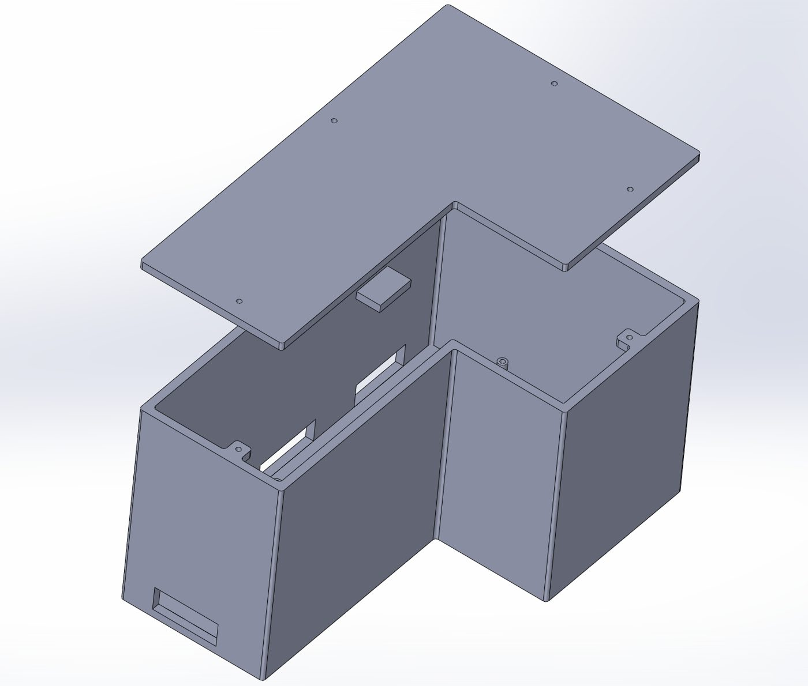
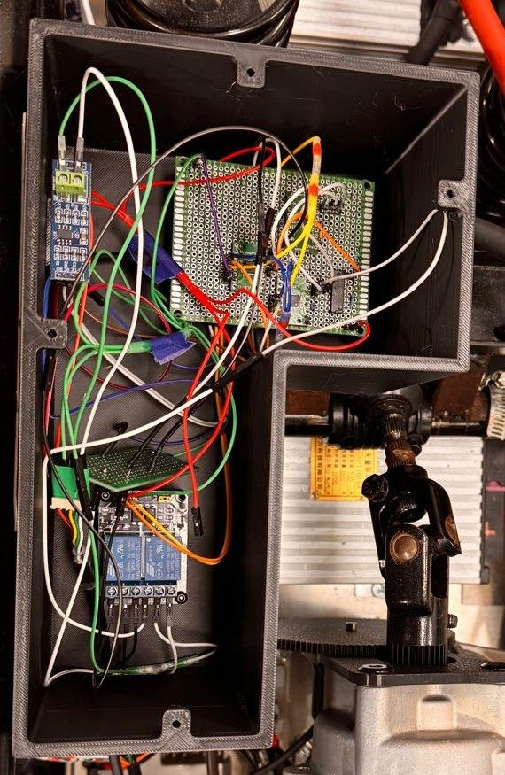
Steering performance
The steering tracks a ±25° sine wave (20 s period) within 1.02° RMS on the ground, down from 2.33° before tuning. With the vehicle jacked up it tracks within 0.60° RMS.
The small steps in the measured trace are breakaway friction: the column sticks until the command is large enough, then jumps. I measured that breakaway level in each direction, added it to the command, and rate-limited the output to keep motion smooth.
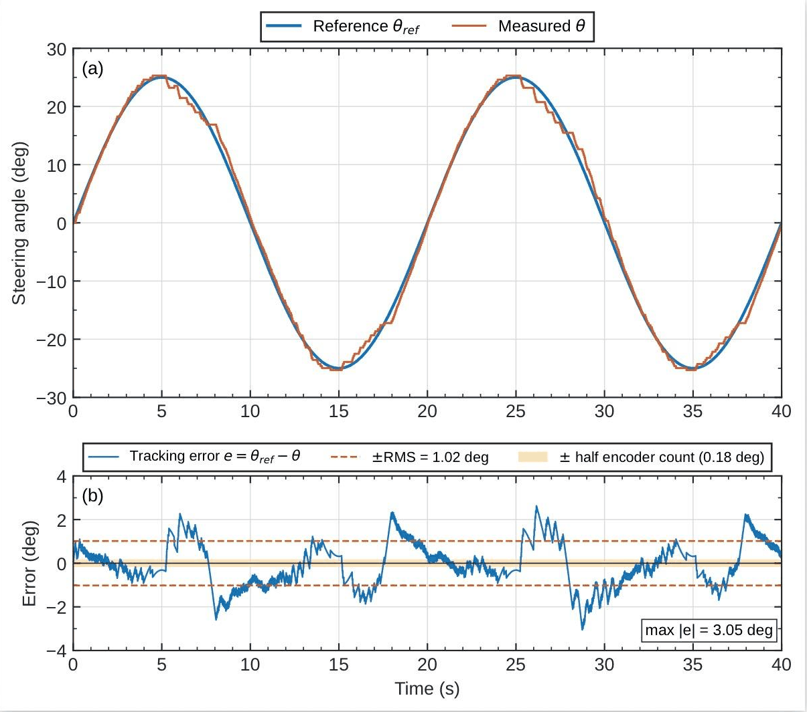
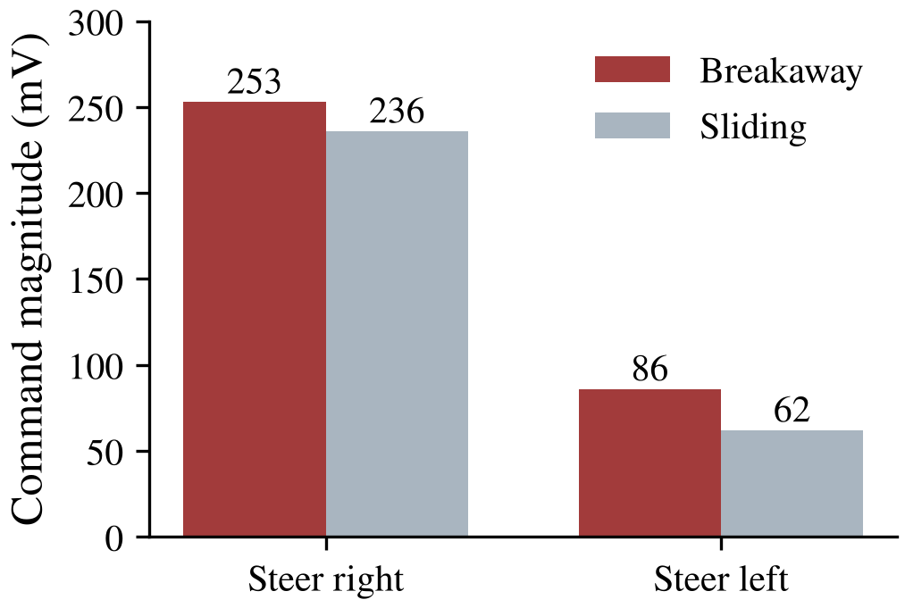
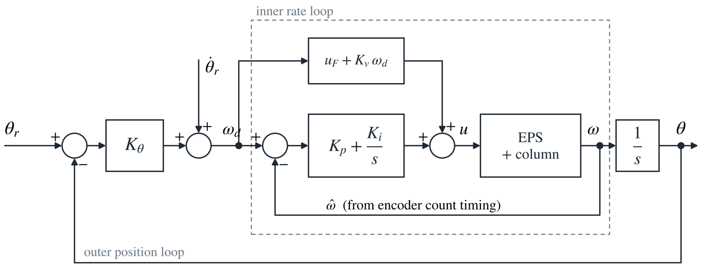
LiDAR mount with forced-air cooling
- Clamps to the roll hoop. A vented shroud lets fresh air in and an exhaust fan pulls it across the LiDAR.
- Printed in ASA, which holds up to heat and sun far better than PLA (PLA softens near 60°C).
- Metal inserts and through-bolts so warm plastic can't creep loose, and gussets to stop the sensor shaking.
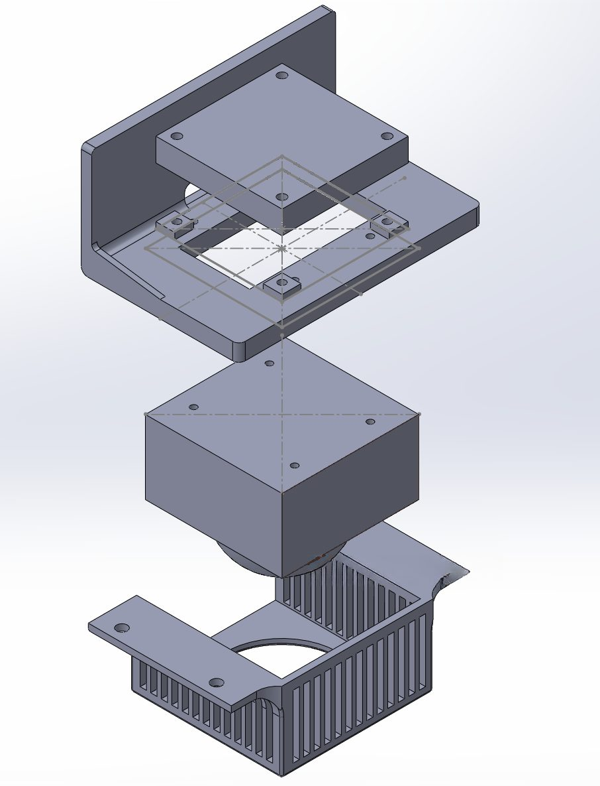

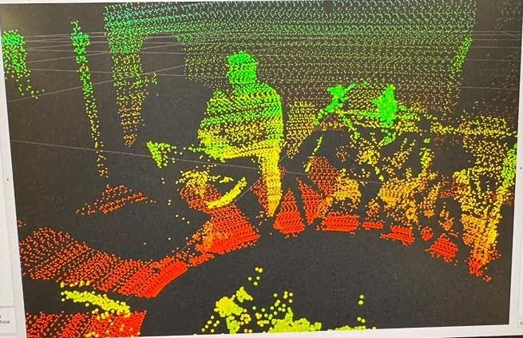
Camera mount with vibration isolation
- Two ASA halves clamp around the front frame tube, bolted through metal inserts.
- A neoprene liner in the clamp bore isolates frame vibration. Without it, lane detection dropped out more often; with it, detection held above 95% in the same test conditions.
- The liner also grips the tube, which stopped the mount from rotating.
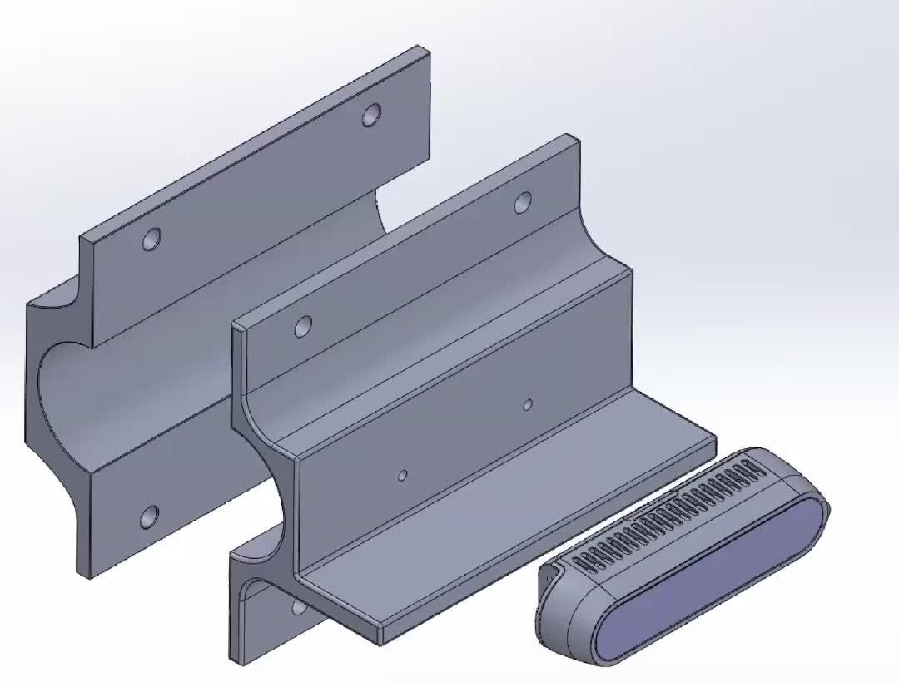
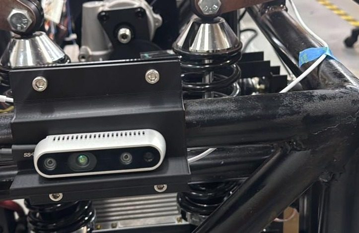
Sheet-metal motor-controller mounts
- Each plate carries one of the four 96 V hub-motor controllers and clamps to the frame tubes. No drilling.
- Designed in SolidWorks sheet metal, so the flat pattern comes straight from the model: waterjet the blank, bend one flange.
- The flange stiffens the plate and the clamps let each controller come off for service. Harness routing was planned with the mounts.
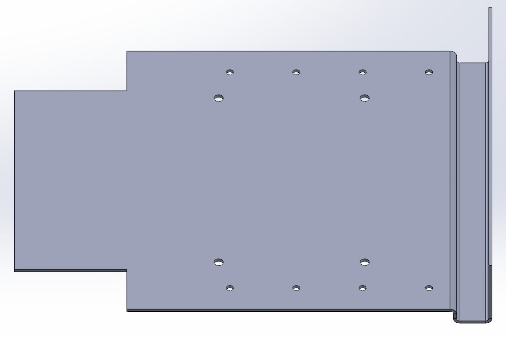
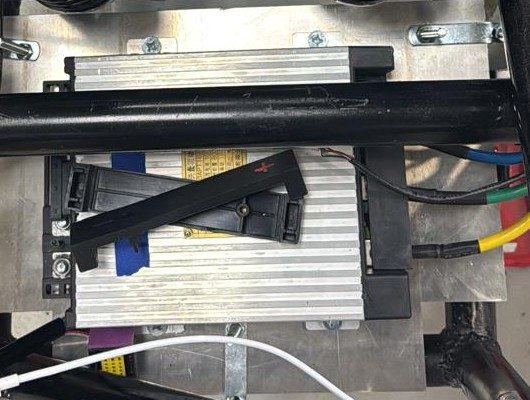
Autonomy software
The thesis controller is a hierarchical MPC built in acados and validated in CARLA with zero collisions, backed by an emergency-braking supervisor. A lane-keeping MPC also runs in simulation. Both are now in experimental testing on the vehicle using the encoder, LiDAR and camera hardware above. Controller details →